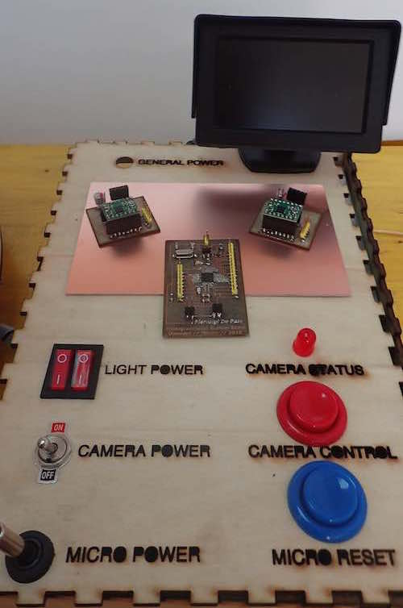
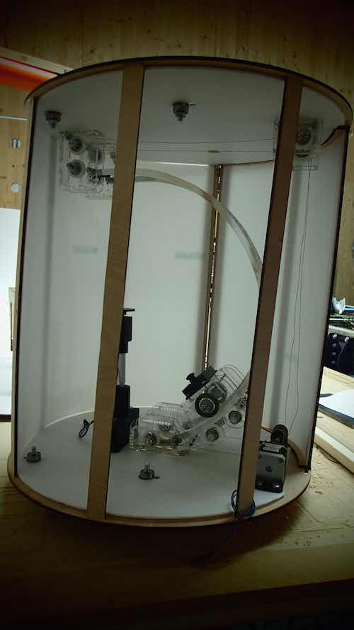
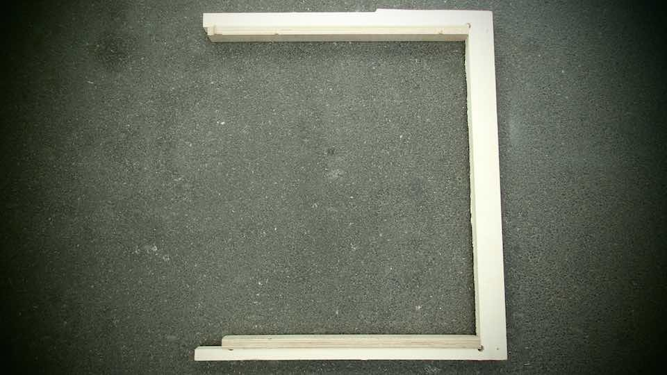
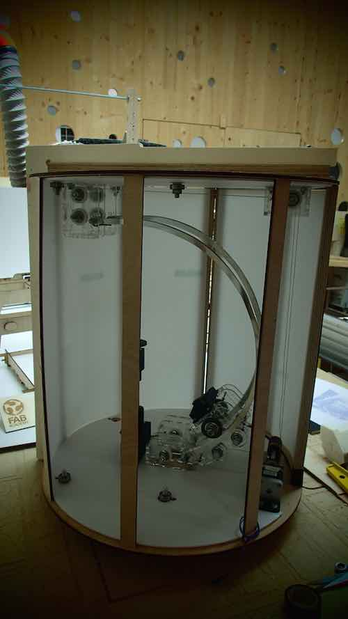
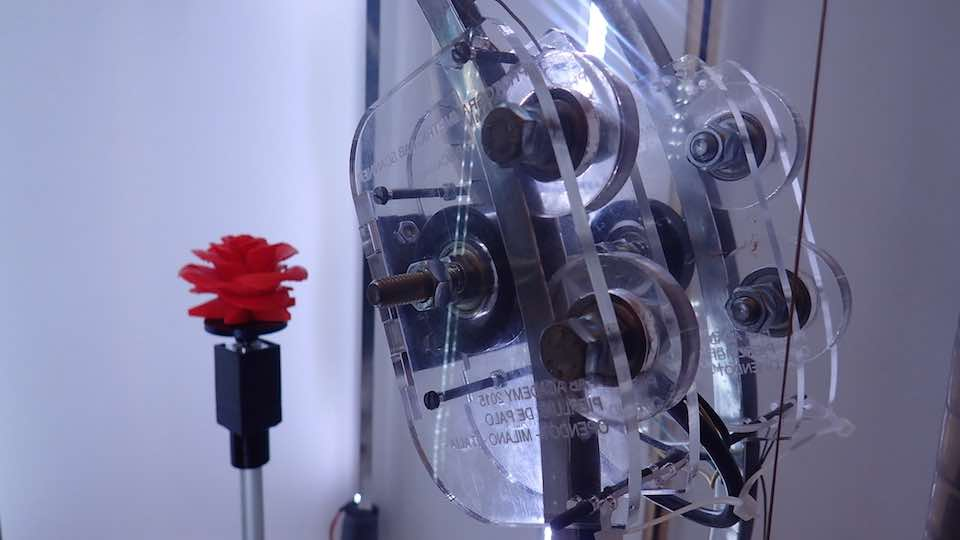
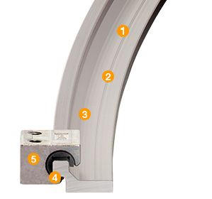

****************************************************************************************************************
****************************************************************************************************************
I have managed to achieve a lot more than thought I would when I started this project. I have overcome a lot of technical problems that I did not think I would be able to resolve. From my point of view all I was asked to develop has been completed. The Photogrammetric Fab Scanner exists, and is equipped with all the elements that I expected. Unfortunately after they were produced, some elements have proved to be weak or not sufficiently precise, in relation to the technical demands of the project. This means that the project necessitates a new stage of development. And this is the reason why I have not uploaded a video of the working project. I will upload it later when the V1 of the Photogrammetric Fab Scan is ready

What remains to be completed is the "Scanner Control System", a sort of remote control system for the machine, that I have started to develop. It's a system that provides the possibility of controlling the different parts of the system. Separately.
This box contains: One ATX power supply that I use for :
1 - supplies the LED light system. I use 2 electrical switches to separately power on the FRONT LED LIGHT - used to illuminate the object to be scanned - and the BACK LED LIGHT - used to illuminate the background of the box
2- I also use 12V power for the small 5 inc monitor, that allows me to view the video out signal of the camera.
3- The ATX power supply allows me to have 5V of power on my micocontroller board.
4- One separate 4.5V power supply is inside of the box to supply the videocamera.
Each peripheric is ON OFF switchable with the same buttons.
I provided one bottom for the reset of microcontroller and one Red Led Light that shows me how the camera working
I would like to integrate the "control box’ in the top part of the scanner.
The bigger problems that I encountered were :
1- The plywood 5mm structure of the box is not sufficiently resistant: the nature of the structure - cylindrical with vertical uppercuts - is not suitable for supporting the stress and tension produced by the weight of the rail and the camera support. Also, the tensions produced by the motorized traction system used to move the camera along the rail, will cause the structure flex on itself. If I had not introduced the changes with a C-wood structure, it would collapse on itself.


2- The aluminum curved rail I built in the FabLab is obviously not very linear. This allows the camera to move with same friction on the rail. This problem is secondary, given that the movement of the camera along the rail is not necessarily smooth. However, the friction will increase tension, that when added to the fragile nature of the wood structure will undoubtedly increase the instability of the movement of the camera support along the rail
The problems related to the structure can be resolved easily: I have not yet decided which is the best new design solution for the structure, but probably the vertical uppercuts of the next prototype will be a 8mm thread bar. Or again in plywood, but this time milled from 1.2mm hard wood. The metallic 8mm thread bar will give me a better possibility of climbing on and off the structure more easily and will probably make it more rigid, and more resistant to damage caused by the increased weight of the scanner. Moreover I may use a temporary solution to increase the rigidity of the structure of the new prototype and use it as a transport handle.

Concerning the bending of the rail, different and expensive solutions are commercially available - from the Igus system to the water cutter of an aluminum profile
Maybe an alternative more DIY solution would be to abandon the idea of a concave aluminum rail, that also as a wheel track and reverse the concept: some 8 mm Plexiglas can be used to create the rail; the wheels can be modified with external supports used as rail guides.


During September 2015, I will start working on this prototype again: my objective will be to produce a version of the PHOTOGRAMMETRIC FAB SCANNER 1.0. I am absolutely convinced that I will succeed in my quest to make stable and perfectly working prototype of this machine : -)
****************************************************************************************************************
What I have learned in this process of prototype development is that the education road of the Fab Academy is vast, complex and extremely important. And over and above the skills I acquired in digital fabrication, electronics and coding, I now understand the importance of planning and time management.
It's no secret that systematically, every week, I was faced with the difficulties associated with time management: planning the exercise, producing it and documenting my experience. There was never enough time for doing the exercises better
Nevertheless, I am extremely happy with the work I have done and the skills I have acquired along this journey path. There is no doubt that the part of "digital fabrication" was easier for me as it is closer to my professional skills. I like to "make things" and look the physical nature of them. Electronics is a really interesting area too: I love having the possibility of making my own circuits, programming for what I want it to do. Of course, it is really difficult acquire level of skills to allow me to work autonomously; and it would take years of study and practice to be able to choose and use the good components for making your board do what you want. However a pcb board is a physical object: you can look it, you can touch it. The third part of the course was the coding and programming part: and this was the part I found most difficult. The code is not physical and it is difficult to imagine, and predict what effect it will have. In reality, this part of the course intrigued me. I did not spent much time on it because I am aware of my complete inexperience and I would need a lot more time to grow and mature in this area.
The discussion ends as it started: with a reflection on time.
Time is never enough, if it isn't controlled in a virtuous way, to develop it in the most beneficial direction of your objectives.